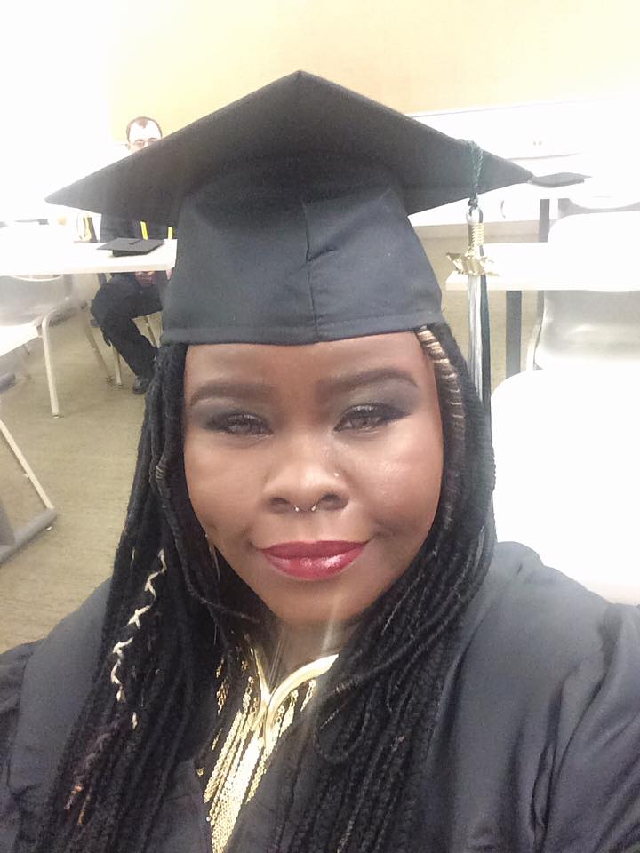
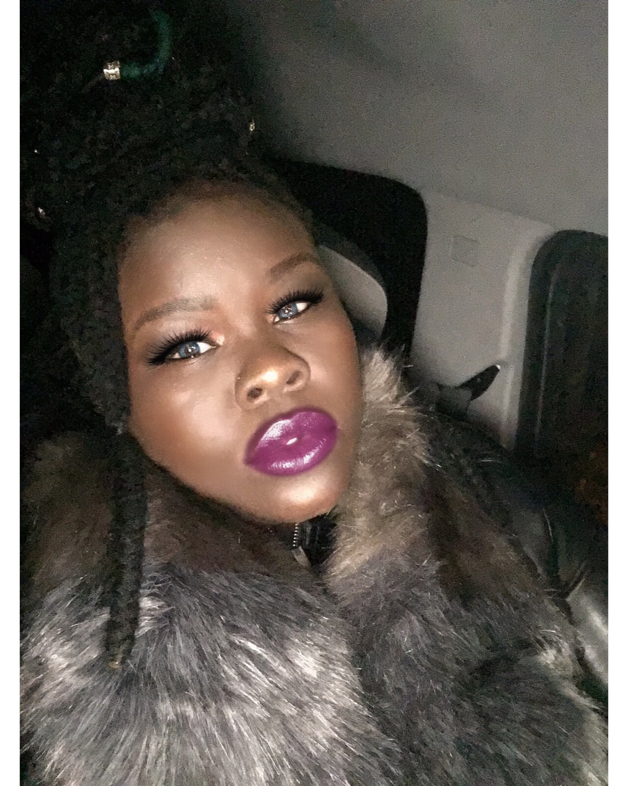

My name is Chante Johnson. I'm a senior here at Point Park Unviersity. My major is Computer Science as noted. I recieved my AA in Computer Science back in 2017. The focus was on the hardware side of things.However, I'm interested in learning the coding side. I will be taking Business Analytics and Networking for Spring 2. I will be finishing up by summer 2020. I have 2 children; 1 and 11. I'm an IT Instructor for the Common Wealth. My hobbies are traveling,singing, history and nature. I can be contacted by email cjohns4@pointpark.edu or by mobile 443-488-1893.
 August 2018 was my first semester |
August 2020 marks my completion |